Defecte bovenleiding: schade en beperkt metroverkeer...
- maandag 01 december 2008 10:57
- Geschreven door Joachim
Vanmiddag werd rond 14.00 uur de bovenleiding tussen wisselcomplex Capelsebrug 2 en gelijkvloerse kruising Prins Alexanderlaan (spoor 2) kapot getrokken door een passerende metrosneltram. Hierbij raakten de pantografen van alle metrorijtuigen van wagendienst 555, 5412, 5403 en 5415 zwaar beschadigd.
De hulpdiensten waren snel ter plaatse, er deden zich geen persoonlijke ongevallen voor. Pas toen zeker was dat er geen spanning meer op de bovenleiding stond en deze op een veilige manier geaard was, kon de ontruiming van de metrostellen beginnen. De brandweer, die met groot materieel uitrukte, assisteerde hierbij. Omstreeks 14.45 uur waren alle metrorijtuigen ontruimd.
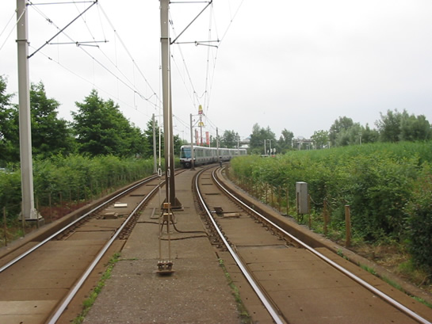
De metrosneltram strandde tussen de kruisingen 's-Gravenweg en Prins Alexanderlaan.
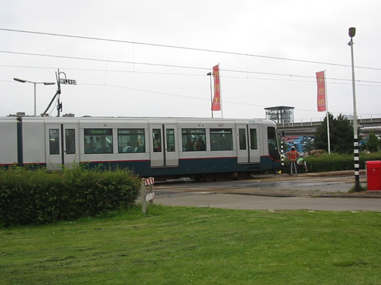
De passagiers zitten nog in het rijtuig, tot dat de situatie veilig is.
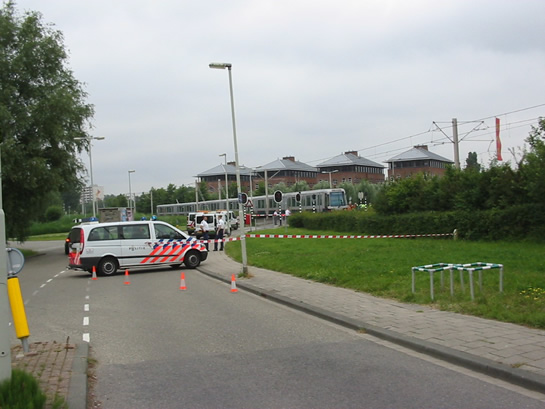
Vrijwel meteen waren de hulpdiensten ter plaatse, die de locatie afzetten.
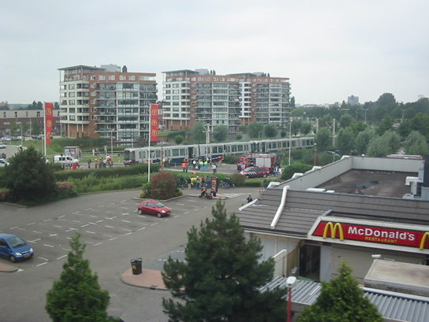
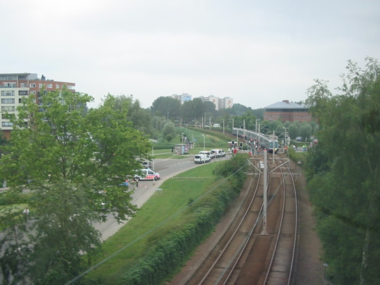
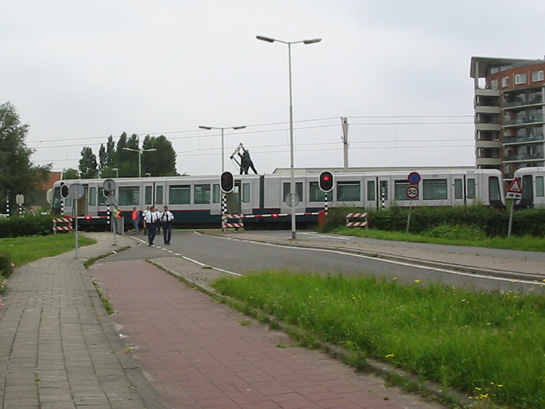
De pantograaf wordt door technisch personeel van de remise 's-Gravenweg omlaag gelaten en met tie-wraps op het dak gebonden.
De gestrande wagendienst kon niet op eigen kracht verder rijden, daarom werd locomotief 6102 gestuurd. Deze werd via spoor 1 gestuurd, omdat op spoor 2 de bovenleiding in het spoor lag. De locomotief reed vanaf de remise 's-Gravenweg naar wisselcomplex Prinsenlaan. Achter dit wisselcomplex werd gekeerd, waarna er via spoor 2 teruggereden werd. Vervolgens werd de locomotief gekoppeld met de metro. Nadat de remmen gelost waren, werd er wederom koers gezet naar wisselcomplex Prinsenlaan om te keren. Na het keren werd de metro van station Prinsenlaan tot remise 's-Gravenweg opgeduwd.
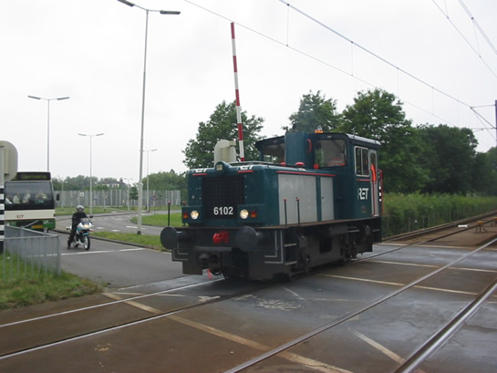
Locomotief 6102 passeert kruising Prins Alexanderlaan, terwijl de AHOB's nog in open toestand zijn. Het verkeer wacht geduldig.
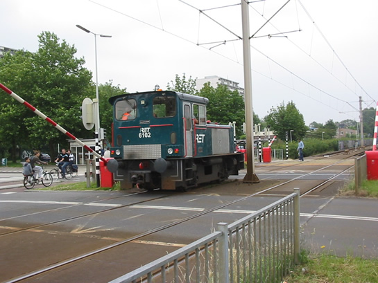
Wederom de locomotief op de retourrit naar de gestrande metrostellen. De AHOB's van de kruising Kralingseweg sluiten net als de locomotief al bijna de kruising over is.
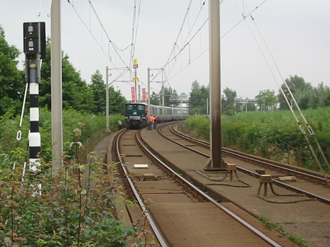
De locomotief parkeert voor de gestrande metrorijtuigen.
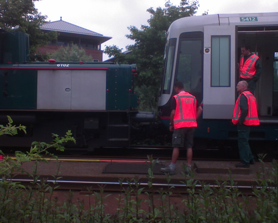
Daarna wordt er gekoppeld.
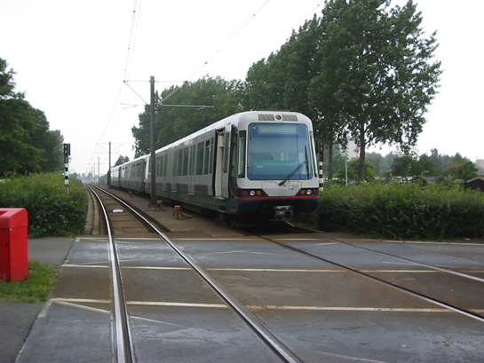
De combinatie wordt op sleeptouw genomen en er wordt koers gezet naar wisselcomplex Prinsenlaan.
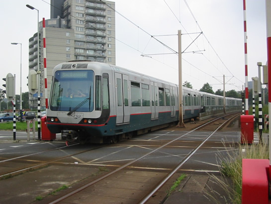
Na het keren passeren de defecte metrostellen, geduwd door de locomotief, de kruising Prins Constantijnweg. Op de stuurstafel staat een baanlamp, die functioneert als frontlamp.
Gestrande passagiers werden vervoerd met pendelbussen tussen station Capelsebrug en station Alexander. Ook konden zij gebruik maken van buslijn 36 of 37. Daarnaast werd het reisadvies gegeven om gebruik te maken van de Nederlandse Spoorwegen tussen Rotterdam Centraal en Rotterdam Alexander.
Het metroverkeer is rond 19.00 uur hervat. De metro's richting Ommoord/Nesselande en Schiedam Centrum rijden tussen de stations Capelsebrug en Schenkel v.v. via spoor 1. Reizigers richting de stations Slotlaan, Capelle Centrum en De Terp moeten op station Capelsebrug nog wel overstappen op de pendelmetro naar Capelle a/d IJssel.
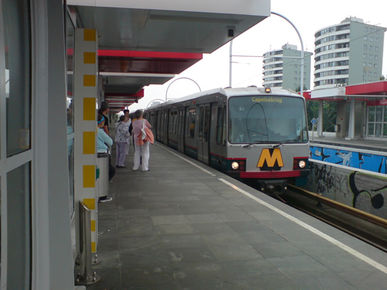
Deze metro zou verder gaan naar Capelle a/d IJssel, om daar vervolgens te keren en terug te gaan naar Schiedam Centrum of Spijkenisse.
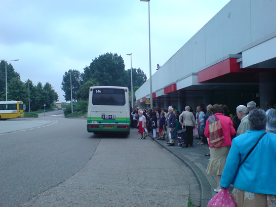
Grote drukte voor de lijn- en pendelbussen.
Het schadeherstel aan de bovenleiding zal nog een groot deel van de avond duren. Er zijn twee bovenleidingmontagewagens aanwezig om het herstel zo snel mogelijk uit te voeren. Aangezien de bovenleiding op één plaats gebroken is, zal een nieuwe rijdraad ingespannen moeten worden.
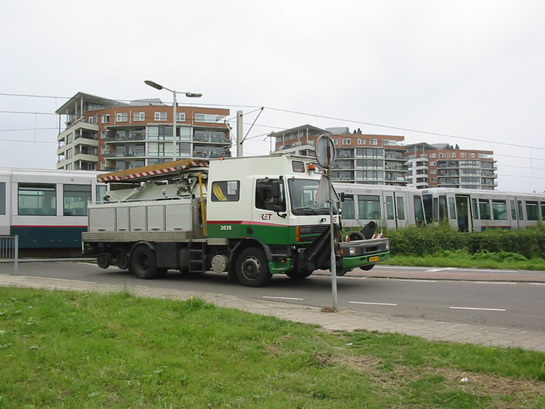
Bovenleidingwagen 2038, gereed om het spoor in te gaan voor schadeherstel aan de bovenleiding.
 Meer foto's: MediaTV.nl
Meer foto's: MediaTV.nl
 Meer foto's: 112Webteam
Meer foto's: 112Webteam